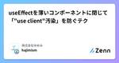

株式会社ゆめみのフィード
https://zenn.dev/p/yumemi_inc
みんな知ってるあのサービスも、ゆめみが一緒に作ってます。スマホアプリ/Webサービスの企画・UX/UI設計、開発運用の内製化支援。Swift,Kotlin,Rust,Go,Flutter,ML,React,AWS等エンジニア・クリエイターの会社です。Twitterで情報配信中
フィード

useEffectを薄いコンポーネントに閉じて「"use client"汚染」を防ぐテク 1
1
株式会社ゆめみのフィード
ReactでaddEventListenerするときにカスタムフックじゃなくて薄いコンポーネントにするデザインあって、これまではほぼ好みの問題だったけれど、RSCの登場で「“use client”をそこで閉じることができる」っていう明確な優位性が生まれた。たとえば単にuseKeyDown({"K": listener})を呼ぶと、呼び出し先のコンポーネントにまで「“use client”汚染」があるが// 中身はuseKeyDownを呼んで return <></> するだけ<KeybordShortcutRegistrar keyBindings...
12日前

Dartでのクラスからフィールドを射影する方法を比較する
株式会社ゆめみのフィード
Flutter アプリを開発する時などに、クラスから特定のフィールドの組を取り出して新しいデータ構造を作成する射影の操作は、さまざまな場面で必要になります。本記事では、Dart における射影の方法として次の 5 つのアプローチを取り上げ、それぞれの特徴やメリット、デメリットを比較します。新たなクラスを定義する方法レコード型を用いる方法extension type を活用する方法mixin を使用する方法Map 構造を利用する方法これらを比較して、具体的な開発シーンにおいてどのアプローチを採用すべきかの判断基準を提供します。 新たなクラスを定義する方法新たなクラスを...
19日前
[GitHub] 関連するプルリクをレポートするワークフロー
株式会社ゆめみのフィード
下記のような GitHub Actions のワークフローを用意して、プルリク時に動かすようにします。.github/workflows/associated-pr-report.ymlname: Associated PR Reporton: pull_request: types: - opened - edited - reopened - synchronizeconcurrency: group: ${{ github.workflow }}-${{ github.head_ref }} canc...
1ヶ月前
[GitHub] プルリクのbaseブランチが進んでいないかチェックするワークフロー
株式会社ゆめみのフィード
name: Base Changes Checkon: pull_request: types: - opened - edited # プルリクのbaseブランチを変更した際にもチェック - reopened - synchronizeconcurrency: # イベントの発行順どおりに実行(今回はeditのような画面操作もあるので) group: ${{ github.workflow }}-${{ github.head_ref }} cancel-in-progress: truejobs: c...
1ヶ月前
タコでもわかるDartマクロ作成入門
株式会社ゆめみのフィード
はじめに!Dart 3.4発表直後の記事なので、数ヶ月後には古い情報になっていると思います。Google I/O 2024でFlutter発表の目玉の一つとして、Dartのマクロ(macros)機能が発表されました。これまでコード生成に頼っていたJsonのシリアライズ・デシリアライズ、データクラス作成がより効率的に行えるということで注目されています。より詳しい情報はDart 3.4のMedium記事をどうぞhttps://medium.com/dartlang/dart-3-4-bd8d23b4462a マクロを自分でも作ってみたいマクロはDartのdev版、Fl...
1ヶ月前
Riverpod Generatorに対応したページング高速実装の仕組みを作ってみた
株式会社ゆめみのフィード
はじめに以前Riverpodでページングに対応した画面の汎用実装の記事を投稿しました。https://zenn.dev/k9i/articles/b8c333e1bb8b9b当時は今ほどRiverpod Generatorが広まってなかった（たぶん…）ため、Generator非対応の実装でした。今回Generator対応版の実装を考え、ついでにパッケージ化もしてみたので続編としてこの記事で紹介します👍!この記事およびパッケージはRiverpod Generatorの使い方を知ってる前提です。 デモこういう画面が簡単に作れます！ パッケージ紹介...
2ヶ月前
コミットに署名するとはどういうことなのか
株式会社ゆめみのフィード
貴方は誰ですか？[1] はじめに本記事では、コミットに署名をすることにどういった効果があるのか掘り下げています。読者がどういった署名を採用するかの判断基準が得られることを目標にします。この記事の執筆にあたり GitHub 上でのコミットの見え方を検証するリポジトリを作成して公開しています。https://github.com/ykws/signed-commit-example 扱わないこと本記事では、コミットに署名する具体的な方法については触れません。具体的な方法が知りたい場合は、別の記事で触れているので、そちらを参考記事として紹介します。記事の中で紹介している Gi...
2ヶ月前
ESLint の Legacy Config と Flat Config における Plugin 構造の違いと両対応 Plugin の構造
株式会社ゆめみのフィード
概要ESLint v9 への対応を進めていると、いくつか Flat Config に対応していない Plugin や Config に遭遇することがあります。その際に、Legacy Config のみ対応している Plugin と、Flat Config も対応している Plugin の両方の構造の違いを知っておくと、Flat Config に向けた対応をすすめる上で便利だったため、その違いを俯瞰するための資料としてまとめました。 前提以下で例示する Plugin は、パッケージ名を eslint-plugin-example として、いくつかのカスタムルールと、カスタム ...
2ヶ月前
タグエディタを利用してリソースを検索する
株式会社ゆめみのフィード
はじめに時間が経つと、自分で作成したリソースを忘れがちになりますよね。リソース作成時にタグ付けをしたり、IaC でリソースを管理している場合は比較的簡単に追跡できますが、試しに作成したリソースは特に忘れやすいものです。特に複数人が利用する環境では、自分のリソースを識別しやすいように ID や名前などの識別子をリソース名として設定することがあります。今回は、そうしたリソースをタグエディタを使って検索し、不要なリソースを削除してみました。 タグエディタを使ったリソース検索 マネジメントコンソールでタグエディタを開くResource Groups & Tag Edito...
3ヶ月前
GitHub Actions と Bitrise のワークフローを連動する
株式会社ゆめみのフィード
基本は GitHub Actions でモバイルの CI を組んでいるが、一部の処理だけ Bitrise で実行したい..というケースでは、Bitrise Build Runner for GitHub Actions を利用してこれを実現することが出来ます。name: CIon: pull_requestjobs: check: runs-on: ubuntu-latest steps: - uses: p-mazhnik/bitrise-run-build@v1 with: bitrise-app-slug...
3ヶ月前
コミットに署名する
株式会社ゆめみのフィード
「私はこれを記述した、そしてこの仕事の後ろには私が付いている」と。品質の証明として、あなたの署名が入っているべきなのです。[1] はじめにコミットに署名しましょう ゴールGitHub 上でコミットに Verified のバッジがついた状態を目指します。Verified をクリックすると、次のようにポップアップで署名の状態について確認できます。 前提Git の初期設定ではコミットに署名はされません。それでもコミットは可能ですが、匿名のコミットになります。また署名には次のように段階があります。名前とメールアドレスが設定されているコミットに署名されているホスト上...
3ヶ月前
[Android] 静的解析の結果を GitHub Pages へデプロイ
株式会社ゆめみのフィード
はじめに下記の投稿では Androd Lint、ktlint、mobsfscan、Qodana といった静的解析ツールの SARIF 形式のレポートと reviewdog を連携して、コードの問題をプルリクへコメントさせる方法について書きました。https://zenn.dev/yumemi_inc/articles/fae967dcaa89e7これらの静的解析ツールは、SARIF 形式以外にも、HTML 形式でのレポート出力にも対応しています。プルリクはあくまで差分についての関心なので、差分ではなく全解析結果を HTML レポートとして参照できるようにしておくことで、問題の...
3ヶ月前
[Android] 静的解析の結果を reviewdog でコメント
株式会社ゆめみのフィード
はじめに先日に次のようなスライドを作り LT をしました。https://speakerdeck.com/hkusu/android-nojing-de-jie-xi-niokeru-sarif-huairunohuo-yong上記のスライドは GitHub code scanning を使う内容になっているのですが、private リポジトリでは GitHub Advanced Security のライセンス（有料）が必要となり、導入するには少し敷居があります。よって今回は GitHub code scanning を使わないパターンとして、各種静的解析ツールの SARIF ...
3ヶ月前
[Android] JUnit の結果をプルリクでレポート
株式会社ゆめみのフィード
利用する coustom action次の action を利用します。https://github.com/dorny/test-reporter ワークフロー上記 action を組み込んだワークフローは次のとおりです。name: JUnit Teston: pull_requestjobs: test: runs-on: ubuntu-latest permissions: contents: read # for checkout checks: write # for dorny/test-reporter c...
4ヶ月前
@storybook/test を使って next/navigation をテストする
株式会社ゆめみのフィード
Storybook の play function や test-runner が登場し、Storybook をコンポーネントカタログの用途だけでなく、テストに活用するプロジェクトは増えていると思います。今回は play function を使って next/navigation および next/router のテストをする方法を紹介します。 結論.storybook/preview.tsx を以下のようにしてください。preview.tsximport { action } from '@storybook/addon-actions'import { fn } fr...
4ヶ月前
Cloud Run 上のページが一部の Chrome 環境で文字化けする謎を探るべく我々は Google Cloud の奥地へと向かった
株式会社ゆめみのフィード
!この記事は 2024 年 2 月 28 日に執筆されました．今後この問題が Cloud Run 側で修正された場合，再現しない可能性がありますのでご留意ください． TL; DRCloud Run は執筆時現在 zstd による圧縮に対応していないヘッダの Content-Encoding: zstd のみが削除され，ボディは圧縮されたまま応答されるブラウザはこの応答を正しく解釈できないため文字化けのような表示となるzstd による圧縮は，執筆時現在 Chrome に実装されているもののデフォルトでは無効だが近い将来に有効化される 悲劇は突然訪れる弊社では，コー...
4ヶ月前
Android Lint の結果を GitHub Pages へデプロイ
株式会社ゆめみのフィード
事前にリポジトリの設定で Pages の source を「GitHub Actions」にしておく必要があります。また GitHub の Free プランだと private リポジトリでは GitHub Pages が使えないので注意。GitHub Pages は１つのリポジトリあたり１つのコンテンツしかホスティングできない（例えばプルリク毎にレポートを作ってしまうと、最新の１件のレポートとなってしまう）ので、デフォルトブランチもしくはメインで利用するブランチへの push 時に、当該ブランチのレポートを作成するのがよさそうです。今回は Android Lint のみのレポートを ...
4ヶ月前
Developers Summit 2024 公開資料・Xアカウントリンクまとめ
株式会社ゆめみのフィード
2024/02/15(木)、16(金)で開催されたデブサミ2024に関する、現時点で公開資料と X アカウントリンクをまとめました。よろしければご活用ください。!この記事は、個人ブログへ投稿した記事の転載です。 はじめにhttps://event.shoeisha.jp/devsumi/20240215登壇者名は敬称略させていただいています。スライドについては、ご本人がツイートで展開されていたり、スライドサービスにアップロードされているものを記載。X アカウントについては、多くの方はデブサミ公式サイトの紹介ページに記載 or 資料記載がありましたので、そちらから引用...
5ヶ月前
GitHub Actions Node 20 対応状況
株式会社ゆめみのフィード
はじめにGitHub Actions で Node 16 を利用していると次のような警告が表示されています。Report dependency differencesNode.js 16 actions are deprecated. Please update the following actions to use Node.js 20: actions/setup-java@v3. For more information see: https://github.blog/changelog/2023-09-22-github-actions-transitioning...
5ヶ月前
効果的にアラートを使おう
株式会社ゆめみのフィード
はじめにゆめみiOS研修に APIのエラーハンドリング のセッションがあります。https://github.com/yumemi-inc/ios-trainingこのセッションでは次のような課題があります。APIエラーが発生したらUIAlertControllerを表示するこのセッションをレビューする過程で、アラートの表示はこれで良いのだっけと疑問に感じることが増えて、ヒューマンインターフェースガイドラインを読み直し、アラートに対する考えが深まりました。 ヒューマンインターフェースガイドラインヒューマンインターフェースガイドラインのアラートのページを繰り返し読み...
5ヶ月前